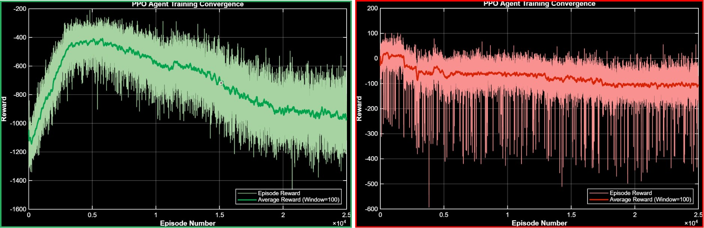
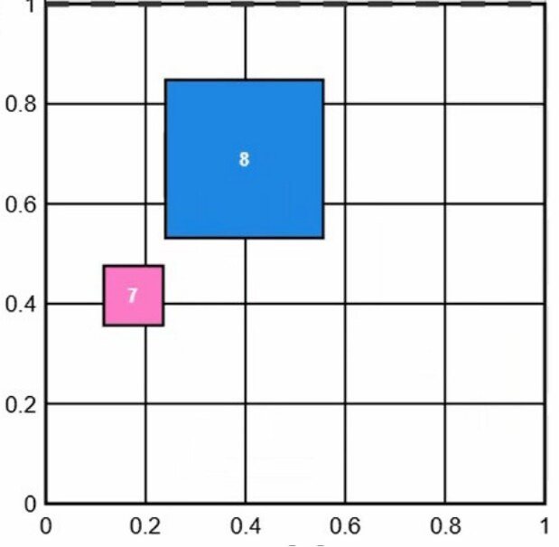

A Proximal Policy Optimization agent that controls a 5×5 grid of independently-actuated motor cells to take scattered, randomly-sized parcels and singulate them into a single, evenly-spaced line — reaching 100% functional-requirement compliance after ten iterations of reward-function redesign.
E-commerce logistics needs to turn chaotic, randomly-arriving parcels into a single ordered line before scanning and routing — traditional conveyors (cross-belt, pop-up rollers) can't adapt to variable parcel sizes and arrival rates. The Active-Matrix Separator (AMS) replaces the conveyor with 25 independent motorised cells (5×5, 0.2×0.2 m each) that can each impose a distinct velocity and rotation on the parcel above them — a fully distributed alternative to one uniform belt force.
With a 50-dimensional continuous action space (2 parameters × 25 cells) and constantly varying box sizes and arrival timing, hand-written IF-THEN rules explode combinatorially. The project frames this instead as a Markov Decision Process and trains a PPO agent to discover the control policy on its own.

| ID | Requirement | Verified via |
|---|---|---|
| FR1 | Cargo singulation into a single continuous row | Cumulative accuracy at the 1 m evaluation line |
| FR2 | Minimum 15 cm longitudinal gap between parcels | lastGap metric during simulation |
| FR3 | Zero bounding-box collisions | Collision-penalty counter per episode |
| FR4 | Exit close to the lateral centerline | Statistical deviation from X = 0.5 m |
A fixed 100×1 vector: positions, diameters and velocities of up to 10 parcels, the previous 50-dim action (for kinematic memory under partial observability), and exit flags.
50 continuous outputs — per cell, a rotation in [−45°, +45°] and a forward speed in [0.5, 2.2] m/s, mapped from PPO's tanh output range.
PPO with a clipped surrogate objective (clip = 0.2) and Generalized Advantage Estimation (λ = 0.95, γ = 0.99) to balance long-horizon credit assignment against variance.
Actor & Critic MLPs, [512, 256, 128] units, He initialisation, ReLU hidden layers, tanh + softplus action head.
Sparse end-of-episode rewards are nearly impossible to learn from in a 50-dimensional action space, but dense shaped rewards invite the agent to hack the reward instead of solving the actual task. Getting from a naive reward function to one that actually singulates parcels took ten iterations, each surfacing a new failure mode:
Penalising gap error quadratically caused the agent to panic-brake and jitter laterally instead of settling smoothly. Switching to a linear penalty gave a smoother gradient and stopped the oscillation.
A minimum-speed penalty (to stop the agent freezing) directly conflicted with the collision penalty whenever a parcel was blocked from ahead: slow down → speed penalty; speed up → collision penalty. Solved with an adaptive is_blocked exemption that lifts the speed floor for blocked agents.
The physics engine reported lateral velocity in metres-per-step, not metres-per-second — so a parcel actually moving at 1.9 m/s registered as 0.019, triggering constant false slow-speed penalties. Fixed by dividing through by Δt to get true SI units, which also let the over-strong centering penalty be relaxed to a proximity-weighted parabola.
Because the gap check only looked at the Y-axis, two parcels safely overtaking each other on different lateral lanes still triggered a heavy gap penalty when side-by-side — so the agent learned to pin parcels against the walls instead of actually singulating them ("wall hacking"). Fixed by adding an X-lane differentiation term: parcels in different lanes are exempt from the gap penalty and rewarded for average speed instead.
Early iterations (V1, V5) actually show flatter, more positive-looking reward curves than the final version — which looks like better learning until you watch the video: the agent found a stable, cheap way to avoid penalties (hugging the walls) rather than solving the real task. The final architecture's reward curve shows a much sharper initial drop as the agent is forced through the harder constraints, before climbing to a stable plateau that actually represents 100% accuracy — a reminder that the reward curve alone can be a misleading proxy for task success.
In the wave-based scenario (parcels replenished as previous ones exit), the trained agent meets FR1–FR4 with a wide safety margin — the average gap between parcels settles at 0.89–1.30 m, roughly 6–9× the 0.15 m minimum. Before training, a random-weight agent produced overlapping parcels and negative gaps down to −0.128 m, with only incidental 40–50% accuracy from random spacing rather than any learned behaviour.
Numerical accuracy alone can be misleading (a 71% score can hide a policy that's actually broken), so each reward iteration was also validated visually:
A stress configuration (batch 64, 10 epochs, entropy weight dropped to 0.005 — pushing for faster, more exploitative updates) was tested against the reference setup (batch 128, 3–5 epochs, entropy 0.02). Training time increased from ~14 to ~24 hours, and the policy collapsed into a local optimum: the agent stopped exploring, forgot the X-lane separation rule entirely, and went back to colliding parcels. Confirms the need for a minimum exploration margin — more updates per batch isn't automatically better in an environment this constrained.
The 85–100% accuracy swing under the continuous-injection stress test comes from the 1 m² AMS area's physical discharge capacity, not the PPO policy. → Larger grids (7×7, 10×10) would test whether this is truly a hardware limit.
Training ran in an idealised kinematic simulation — no actuator latency, sensor noise, or friction variation. → Real-hardware calibration would be needed before deployment.
One policy currently controls all 25 cells. → A distributed multi-agent (MARL) architecture, where each cell or cell-cluster decides independently, would scale better to larger grids.
Full MATLAB implementation, environment, and training scripts are public on GitHub. The complete written report covers the MDP formulation, all ten reward iterations, and the ablation study in full detail.